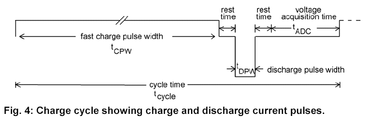
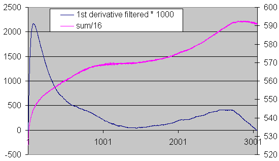
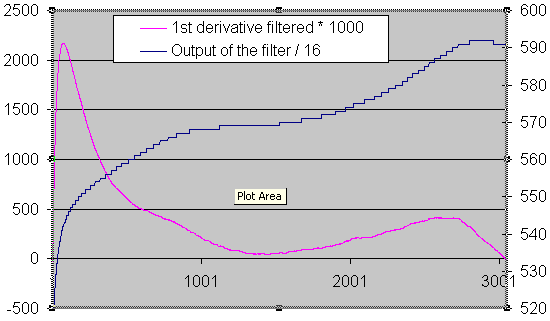
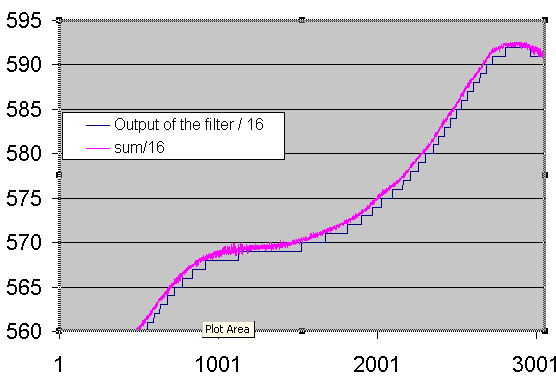

July 2003
Reflex Charging

From datasheets ICS1700,
Every chargepuls the voltage is measured several times and filtered by a IIR filter (filter is not specified).
Every filtered value is stored in a 12 point FIFO, from which the first derivate is calculated by a linear regression.
y = ax + b
a = [ n * sum( x * y ) - sum(x) * sum(y) ] / [ n * sum(x * x) - sum(x) * sum(x)
where n = number of measurement points, y = measured value, x = time coordinate
Some interpretation
the above formula, is a nice formula from a theory book which forgot to get into practice (or in other words, Galaxy power is trying to let us believe that's very difficult.
In more pratical books you'll find a far more convenient formula (constant factor is ignored):
a = 12 * sum ( t * x ) - 6 * ( T+1) * sum (x)
where T is number of samples,
so by taking 11 instead of 12 samples we even get a simpler formula
a = sum ( t * x ) - 6 * sum (x)
with the add of a accumulator shift register, the calculation becomes very nice
1. first remove x1 from the slope: a := a + 5* x1
2. add 6 times the new value a := a + 6* x12
3. shift the fifo and put new value in
4. subtract all the fifo elements once from the slope: a := a - sum(fifo)
Diego Sierra
did the following measurements with a pic design
thanks Diego.
|
|
 |
|
|
 |
|
Comparison of filtered and sum over 16 samples |
 |